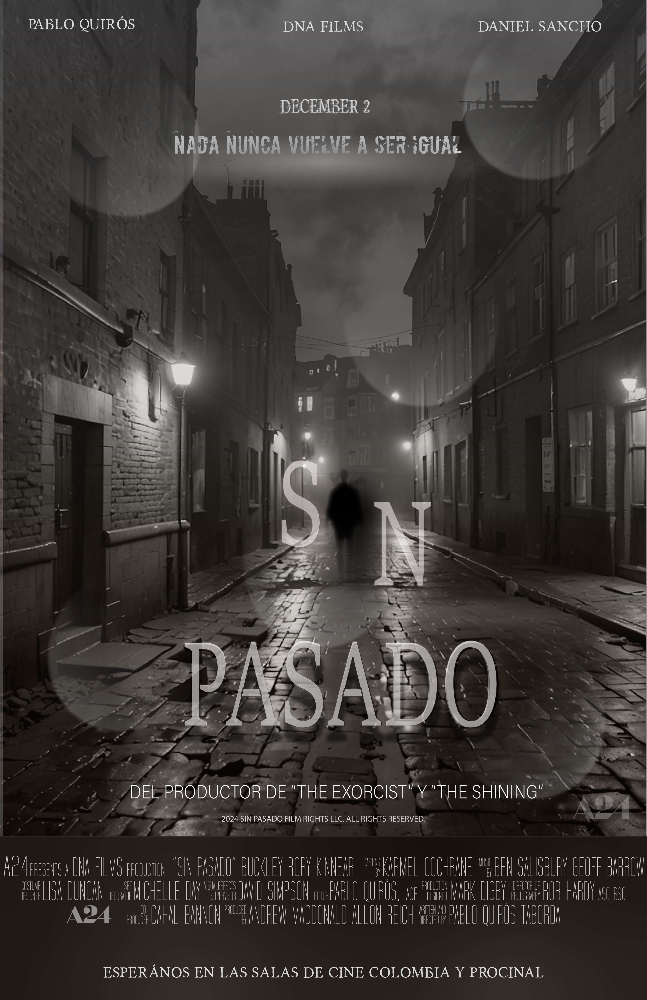
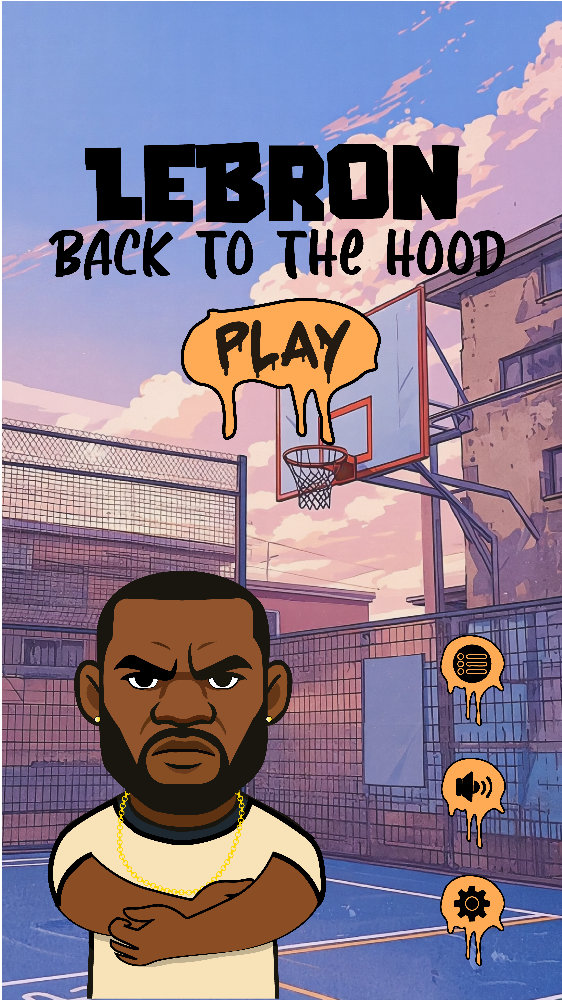
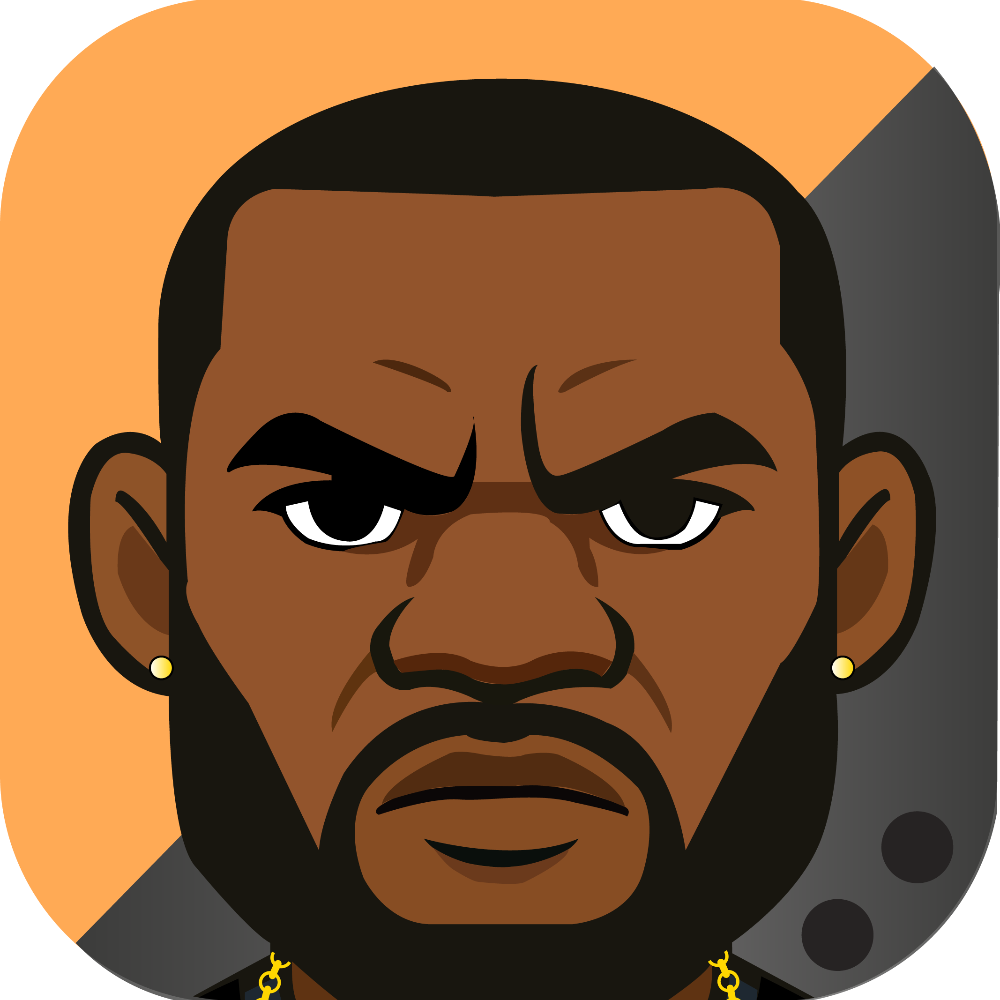
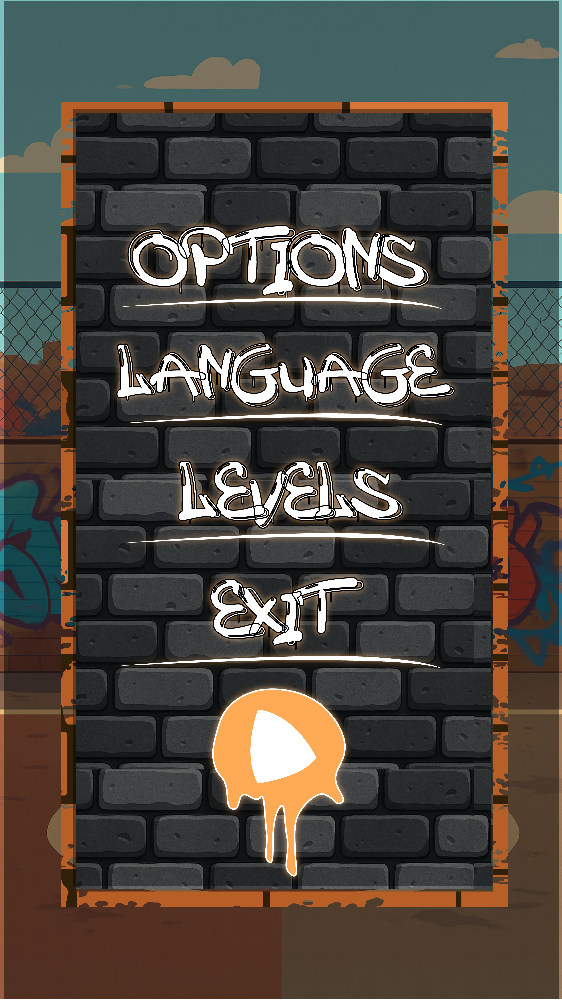
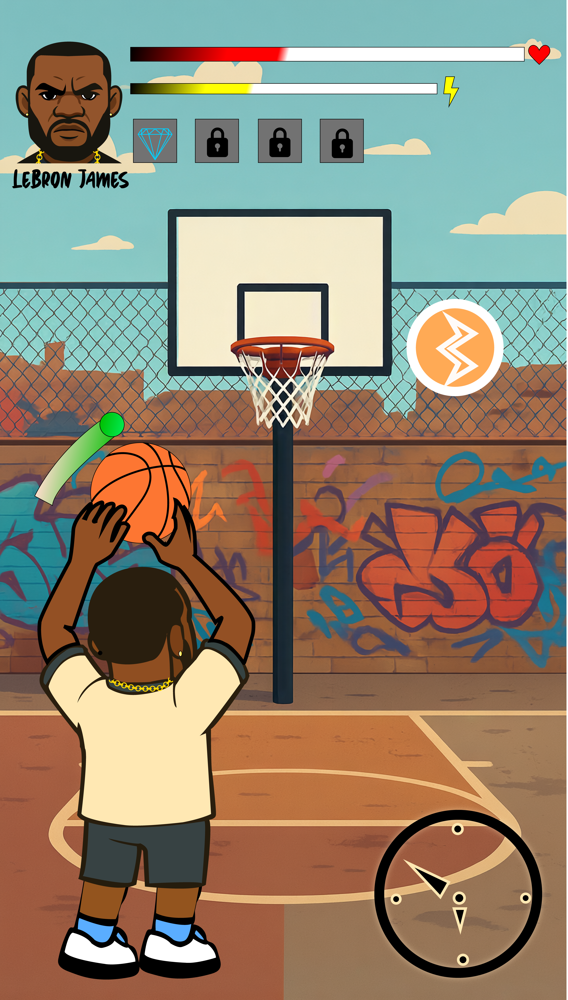
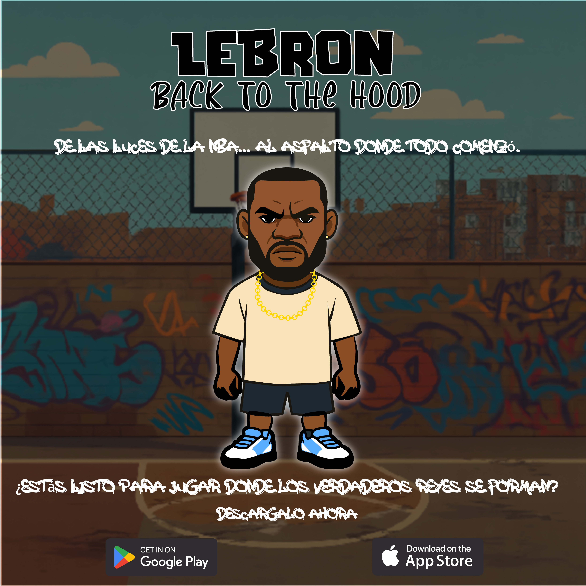
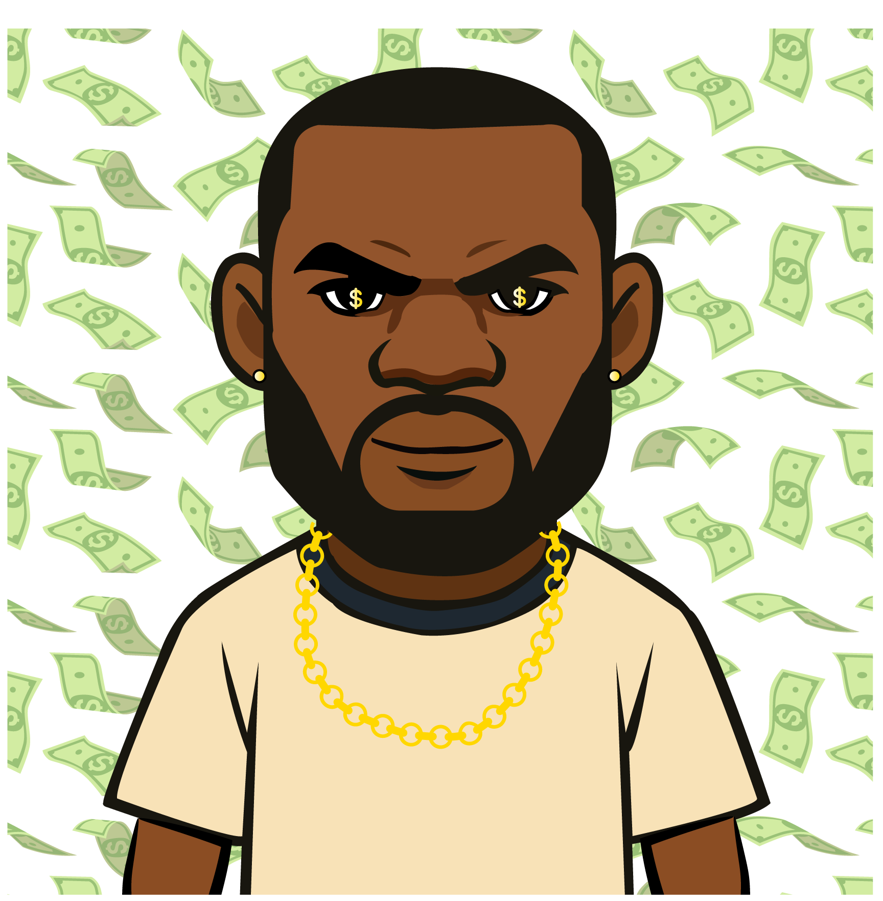
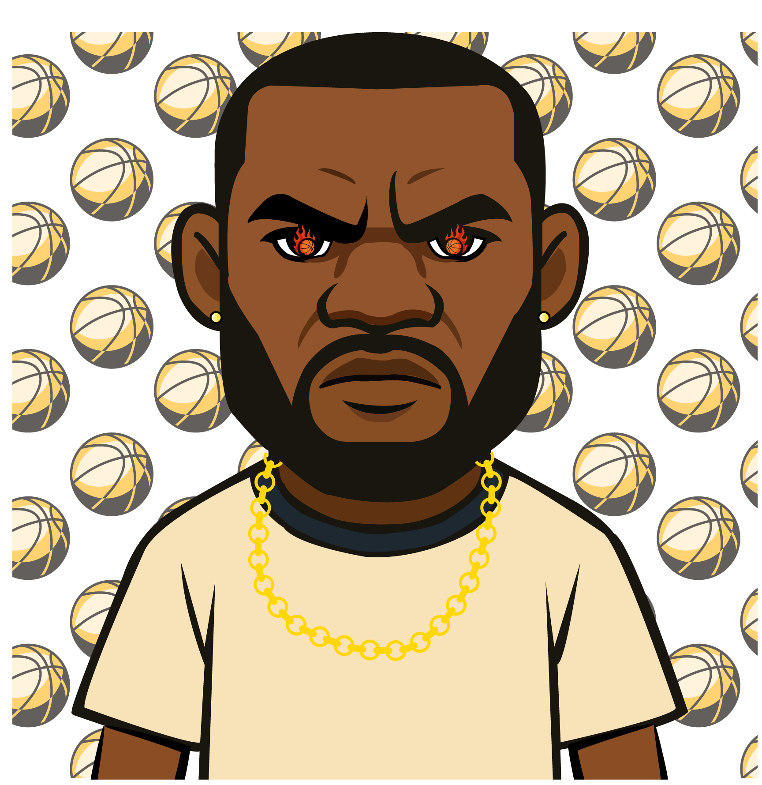

COMUNICACIÓN SOCIAL · MEDELLÍN
Meaningfull and thoughtful
Communication
Un portafolio de proyectos en narrativa, investigación, comunicación audiovisual y creación de contenidos.
VER TRABAJOSPORTAFOLIO
Selección de trabajos
Una muestra de proyectos que reúnen escritura, investigación, narrativa y producción.
PERIODISMO · REPORTAJE
Muros blanquea'os
Proyecto periodístico sobre memoria, territorio y expresión artístico-política en Medellín.
VER PROYECTO →PERIODISMO · ESCRITURA
Crónica
Una exploración narrativa del arte urbano en Medellín
LEER →LITERATURA
Texto literario
Una pieza de escritura creativa centrada en atmósfera, creación de universos y narrativa.
LEER →AUDIOVISUAL · PRODUCCIÓN
Corto de terror
Producción audiovisual colectiva: actuación, producción y guión.
VER VIDEO →
DISEÑO · COMUNICACIÓN VISUAL
Trabajo gráfico
Selección de piezas desarrolladas para diferentes proyectos.
VER PIEZAS →VIDEOJUEGO · ILLUSTRATOR
IDEACIÓN GRÁFICA
Selección de piezas desarrolladas en Adobe Illustrator.








DISEÑO · ILLUSTRATOR
Presentación gráfica
Selección de piezas desarrolladas en Adobe Illustrator.
DISEÑO · ILLUSTRATOR
INFOGRAFÍA GRAFFITIS
Proyecto desarrollado en Adobe Illustrator.
SOBRE MÍ
Apasionado por narrar historias
Soy un estudiante de Comunicación Social interesado en la narrativa, la investigación y la creación de soluciones comunicativas.
Mi trabajo parte de una pregunta: ¿cómo convertir una idea, un problema o una historia en una comunicación que realmente conecte con el lector?
Este portafolio reúne algunos de los proyectos que mejor representan esa forma de trabajar.
HABLEMOS